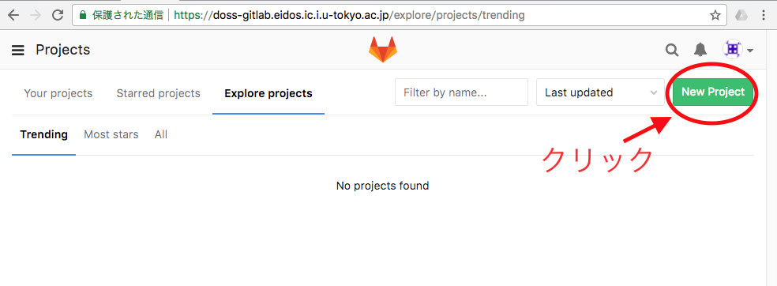

上記のような構成で作業をするにあたっては， まずはgitlabサーバにアカウントが作られていなくてはならない． アカウントは，以下のURLにアクセスして，右の"Register"の項目から登録する．
https://doss-gitlab.eidos.ic.i.u-tokyo.ac.jp
なお，以降の作業をするにあたって必ずしも必須ではないが， 推奨される設定作業として，SSHキーの登録がある． その説明は後回しにして，その先の説明を行う．
ここでは，チームで作業する練習として， チーム内の一人がGitLabにソースコードを追加し， 別のメンバーがそれを取り寄せることを体験してもらう． 練習のため，前回改造したgnuplotのソースをチーム内で共有してもらう ことにする．
GitLabの「プロジェクト」というのは，今はGitのリポジトリと一対一対応すると覚えてもらえばよい． プロジェクト開始時に必要なセットアップ手順は，
GitLabの画面上のどこかにある "New Project" というボタンを押す． （以降，GitLabのバージョンによって画面に多少の差異があるかもしれない．）
そして，プロジェクト名を入力して確定する．
これで，GitLabサーバ上に，空のプロジェクトが作られる． なお，この状態でプロジェクトのページへ行くと， 以下のような画面で以降の手順が案内される． 以下で説明するのはこの内の上の方(Create a new repository) に沿ったやり方である．
cloneするには https 経由で行う方法と，SSH経由で行う方法がある． 後者を用いるには， SSHキーの登録作業を事前に行っておく必要がある． 本格的作業が始まったら後者にすることを推奨するが, もしSSHキーの登録にハマったら後回しにして https 経由でも良い.
$ git clone https://doss-gitlab.eidos.ic.i.u-tokyo.ac.jp/ユーザ名/プロジェクト名.git
sshでやりたいけどもうhttps経由でcloneしてしまったよ，という場合，改めてcloneし直すか，以下のコマンドでリモートリポジトリを変更することができる．
$ git remote set-url origin git@doss-gitlab.eidos.ic.i.u-tokyo.ac.jp:ユーザ名/プロジェクト名.git
$ git clone git@doss-gitlab.eidos.ic.i.u-tokyo.ac.jp:ユーザ名/プロジェクト名.git
URLは，わざわざ打ち込まなくてもGitLabの画面から簡単にコピーできる．
どちらにしても手元に，「プロジェクト名」という，空のディレクトリができるはずで， これが作業ツリーとなる． 一見すると何も入っていないように見えるが，実際には 変更を管理するためのディレクトリ「.git」が存在している． （「.」で始まるファイルは隠しファイルとみなされて，普段は表示されないが， lsに-aをつけると表示される．）
$ ls -a プロジェクト名 . .. .git
ちなみに，なぜこの作業を複製 (clone)と呼ぶかというと， 実は「作業ツリーもリポジトリの一種」だからで， これはGitが採用している分散リポジトリという仕組みの特徴である． 興味があれば調べてみるとよい．
できた作業ツリーに早速ソースコードを追加したいところだが， ここで一つ注意点がある． ソースコード管理のお作法として， リポジトリ内には人間が直接編集するファイル（広い意味でのソース）だけを入れ， configureやmakeの結果各マシン上で生成されるもの （Makefile, config.h, .o ファイルや実行可能ファイル）は入れない， というのが普通である．各マシンの 上で，configure, make, make install とすることで ビルドできるようなものを共有したいのだから， これは当然のことである．だから， ソースコードを追加する時は常に，解凍したばかりの， まだ何も作業をしていない状態で加えることを推奨する．
前回の演習でtar ballをダウンロードしてそれを展開する， というところまで済んだはずなので， もう一度そのtar ballを展開して 変更前のソースコードを追加することにする．
$ cd プロジェクト名 $ tar xvf /home/denjo/gnuplot-5.0.1.tar.gzディレクトリ構成は以下のようになる．
プロジェクト名/
+- gnuplot-5.0.1/
+- config/
+- demo/
+- ...
$ git add gnuplot-5.0.1
これで，gnuplot-5.0.1というディレクトリおよびその下の ファイルが全て追加される．ただし，追加されるとはいっても， その内容がすでにGitLabサーバに反映されている訳ではない．
$ git commit -m "コメント"とする．コメントのところは適切に書く．例えば今なら， "Add source code" とか．
$ git commit -m "コメント" *** Please tell me who you are. Run git config --global user.email "you@example.com" git config --global user.name "Your Name" to set your account's default identity. Omit --global to set the identity only in this repository.言われたとおりにする(上記の下線部を実行する. もちろんEmailアドレスと名前の部分は自分のものに置き換える). 初めてgitを使った人はこう言われるはず. コミットした記録に誰がやったのかを記録しないといけない.
$ git push
ここに至って，先ほどまでに行われ，コミットされた変更 （つまり，ソースコードの追加）が，GitLabサーバへ送り込まれる． pushに至って初めて変更が送り込まれるんだったら， では，その前段のcommitはいったい，何をしていると思えばよいのか．
要するに，ここまで行った色々な変更を一つのパッケージにまとめて， あとで別のマシン（GitLabサーバ）に送り込む際の単位を作っている， と理解してもらえれば良いのではないかと思う．
ここまででGitLabサーバにコミットが無事送り込まれた． GitLabをブラウザで見れば，ファイルが見られるはずである． 他の人が行った変更やそれらの履歴などを見ることも出来， GitLabを使うことのメリットが感じられる．
こうしておけば，他のメンバーがcloneコマンドを実行しても ソースコード一式がダウンロードできる．
$ git clone https://doss-gitlab.eidos.ic.i.u-tokyo.ac.jp/ユーザ名/プロジェクト名.git
$ git clone git@doss-gitlab.eidos.ic.i.u-tokyo.ac.jp:ユーザ名/プロジェクト名.git
自分に見えるプロジェクトはgitlabの画面の, "Projects" -> "Explore Projects" -> "All" から見ることが出来る.
これは2回目以降, チームが出来た時点で行う. まだチームが出来ていなければ飛ばして良い.
GitLabでは，各ユーザアカウントが所属できる「グループ」を作ることができる． チームごとにグループを作っておくと，後々便利なので，予め作っておくことにする． 下図のボタンを辿ると，グループを作れる．
グループができたら，他のメンバーをグループに招待する． 下図のように追加する．
$ cp /home/denjo/gnuplot-5.0.1/src/tables.c プロジェクト名/gnuplot-5.0.1/src/tables.c
$ git commit -m "コメント"既に説明したcommitをここでも使うのだが，ひとつだけ注意がある． それは， commitはそれに先立ってaddコマンドで指定されたファイルしか， 変更されたとはみなしてくれない，ということである． つまり，既存のファイルをただ変更するだけでは， commitはそれに気づいてくれない．それを勝手に発見してくれるようにするために， -aオプションを指定する．もしくは変更したいファイルをいちいち git addで指定しても良いのだが，普通は余りやりたくないのではないか．
$ git pushここは先程と同じ．新たに説明することはない．
$ git pullこれは，他の人がpushした変更を取り込む手段である． 自分が変更をしていようといまいと，時折実行するのが良い． もしくはとなりに座って作業しているのであれば， 他の人がpushしたら自分はpullをするようにすればよい．
今手元の作業ツリーがどうなっているかを調べるのに， 以下の3つのコマンドも知っておくと便利．
ここまでの話で作業は始められる． 以降は時間を見つけて好きなときに読んで下さい． トラブルに遭遇してから読んでも良いが， 事前に読んでおけば心の平穏は保ちやすい．
授業時間中は皆で相談しながら コーディングは一人で，というスタイルを推奨するが， 時には並行して作業をすることもあるだろう (そもそもリビジョン管理システムの本来の目的は， それを可能にすることである)．すると， 複数のメンバーが同じファイルを変更し， commit, pushをするという事態が避けられない． これが，変更の「衝突(conflict)」という現象で， このようなときにgitが何を言ってくるか， 自分は何をすればよいかを知っておくことは， 安心して作業をするために重要である．
今，A, B二人が編集をしているとする． 当然のことながら衝突は二つの， 別の場所で行われた変更が「出会う」ところで判明する． それには少なくとも, A, Bのどちらかが， pushを行っていることが前提である． つまり，リポジトリ内でのファイルの編集や， commitだけでは衝突は発生しない． より具体的には以下の時点で衝突が， 明るみに出る．
それぞれの場合のgitの挙動を説明しておく．
nanamomo:gnuplot-5.0.1% git push To git@doss-gitlab.eidos.ic.i.u-tokyo.ac.jp:tau/my-awful-project.git ! [rejected] master -> master (fetch first) error: failed to push some refs to 'git@doss-gitlab.eidos.ic.i.u-tokyo.ac.jp:ta\ u/my-awful-project.git' ヒント: Updates were rejected because the remote contains work that you do ヒント: not have locally. This is usually caused by another repository pushing ヒント: to the same ref. You may want to first integrate the remote changes ヒント: (e.g., 'git pull ...') before pushing again. ヒント: See the 'Note about fast-forwards' in 'git push --help' for details.つまり，Bに「まずAの変更を取り込むためにpullせよ」と言っている． ので，Bは素直にこれに従う．
$ git pullよって，結局ケース2の場合に帰着される．
nanamomo:gnuplot-5.0.1% git pull
remote: Counting objects: 7, done.
remote: Compressing objects: 100% (5/5), done.
remote: Total 7 (delta 3), reused 0 (delta 0)
Unpacking objects: 100% (7/7), done.
From doss-gitlab.eidos.ic.i.u-tokyo.ac.jp:tau/my-awful-project
b672bcb..a6f0c56 master -> origin/master
Updating b672bcb..a6f0c56
error: Your local changes to the following files would be overwritten by merge:
gnuplot-5.0.1/CodeStyle
Please, commit your changes or stash them before you can merge.
Aborting
stashというのは，コミット以前の変更を一時保存する操作で，大概の場合これがやりたい操作ではないだろう．
なのでまずは自分の変更を(自分のリポジトリ内に)commitすることになる．
$ git commit -m "..." -a $ git pullそこで結局すべては，ケース2-2の場合に帰着する．
nanamomo:gnuplot-5.0.1% git pull remote: Counting objects: 4, done. remote: Compressing objects: 100% (3/3), done. remote: Total 4 (delta 2), reused 0 (delta 0) Unpacking objects: 100% (4/4), done. From doss-gitlab.eidos.ic.i.u-tokyo.ac.jp:tau/my-awful-project 76bcaeb..bbbec8a master -> origin/master Auto-merging gnuplot-5.0.1/ChangeLog CONFLICT (content): Merge conflict in gnuplot-5.0.1/ChangeLog Automatic merge failed; fix conflicts and then commit the result.後者の場合はファイル中に両者の相違点が織り込まれたファイルができる．
<<<<<<<< HEAD Gitはクソだ ======= Gitはクールだ >>>>>>>> 72616890b37a0fb7b2f8cadf83524ed591430d5fこれを見ながら手動で変更する． どちらの場合でも，Bはその後改めて，commitをする．その後push をすれば，めでたく，A, B両者の変更点を統合したバージョンが gitlabサーバにとどく．
... 手動で変更をマージして, <<<<<<<< とかがないファイルを作る ... $ git commit -m "..." -a $ git push
"Git"というのはオープンソースソフトウェアの一つのことで， 各々のコンピュータごとにインストールして使うものである． Gitには標準のGraphical User Interface (GUI) が存在しないので， 基本的には端末エミュレータからコマンドで操作することになる． 「Gitの初心者はGUIから始めるべき」という主張をする人もいるが， ツールの演習も兼ねて，今回はコマンドのみを使ってもらうことにする．
Gitを便利に使えるようにしたウェブサービスは複数存在し， 代表的なものにGitHubがあり， 現在のオープンソースプロジェクトの多くがこうしたサービスを使って 運用されている． GitHubはウェブブラウザから各種操作ができて便利ではあるが， 一企業の商用サービスなので非公開のソースコードを置くと料金がかかる． そこで，GitHubと同じような利便性を提供しつつ， 自前のサーバ上で管理するようなソフトウェアとして GitLabがあり， 本授業でもこれを使っている．
紛らわしいことに，GitLabの開発元では「GitLabの公開サーバ」を gitlab.com 上で運用しているが， 本授業で使うのは授業用に立てた以下のURLにあるサーバである．
https://doss-gitlab.eidos.ic.i.u-tokyo.ac.jpリポジトリとのやりとりはhttpsを利用して行う方法と， SSHを利用して行う方法がある．httpsの場合，pushやpullをするたびに， gitlabサーバ上のユーザ名とパスワードを入力する必要がある． SSHを利用するためには事前に公開鍵を登録する必要がある． 以下はその手順について述べる．
$ ssh-keygenというコマンドで生成する．すでに存在する場合上書きしてよいか， という警告が出るので，その場合は上書きせずにコマンドを中断し， 既にあるものを使えば良い．
授業では詳しく解説していないが， Gitに限らずバージョン管理システムには数多くの機能があり， それに慣れることで生産性を高めることができる． 余裕のある人は，チーム開発の練習と思って， 以下のような機能の使い方に慣れてみるとよい．
{kind=link}
{kind=link}
{kind=link}
{kind=link}
{kind=link}
{kind=link}
{kind=link}
{kind=link}
{kind=link}
{kind=link}
{kind=link}
{kind=link}
{kind=link}
{kind=link}
{kind=link}
{kind=link}
{kind=link}
{kind=link}
{kind=link}